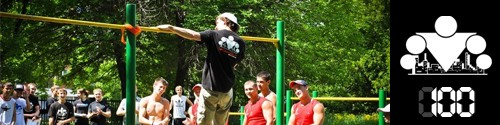

This day had to come sooner or later, right? And if at the start of the program we waited for it impatiently, now it is even a little sad that everything ended so fast.
Please enter your final results in the form on the main page. We need this information to adjust the program and make it more effective.
The SOTKA program was born not only as an answer to the many questions beginners ask, but also as a guide that would have helped us a lot if we had read it before we started our own training.
Taking the chance, we want to thank the people thanks to whom the program took its current form: ogrudko, LeonZ, kiss, mashera, mtbrDot, Safrayt, Nadja2809, Mutamir, nastya_p, Kahar, Brom, workoutrun. Thanks to them and to many other participants with expert knowledge, we made a lot of improvements to the content of the program and made it more effective and useful!
Continuing this topic, we want to say thank you to all the Curators who were not afraid to take a step forward after finishing the program and become leaders in their cities and regions. It is thanks to their help and support that we managed to take the program to a new level and introduce a huge number of new people to SOTKA!
Participant results and reviews are updated in real time, so if you want to compare yourself with others or read their stories about going through the program, you can look at the statistics in the app.
We really hope that after the program ends, participants will not only keep training on their own, but will also start passing the knowledge and experience they received to others!
We will also be very grateful if you record a story about how SOTKA changed your life, with a demonstration of your shape and strength BEFORE and AFTER.